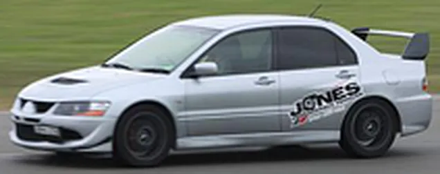
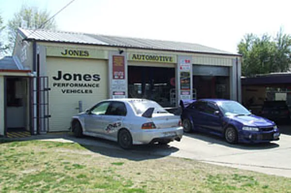

Shane Jones
Before Jones Automotive / Performance Vehicles, Shane built rally cars for Ralliart, in Australia and in the UK. Then he came home to Bathurst.

Shane's career
Ralliart AustraliaGroup A to Group N
Shane built Group A to Group N Mitsubishi Evos for international teams.
Ralliart UKEvo 3, 4, 5, 6 and the first WRC car
He moved to the UK and worked on Evo models 3, 4, 5 and 6, and the first WRC car, the Evo 7 shape, driven by Tommi Mäkinen. Mäkinen won four world championships while Shane was there.
Ralliart Australia, againEd Ordynski and Spencer Lounds
Back in Australia, Shane worked with Ralliart Australia to build cars for Ed Ordynski and Spencer Lounds.
Bathurst7 Bant Street
Shane eventually moved back home to Bathurst, where Jones Automotive Performance Vehicles was started. Today the workshop services all makes and models, does performance work, and is a licensed car inspection unit.

Want Shane to look at your car?
Call the workshop on (02) 6331 6614, or Shane's mobile on 0412 085 266. We're at 7 Bant Street, Bathurst.